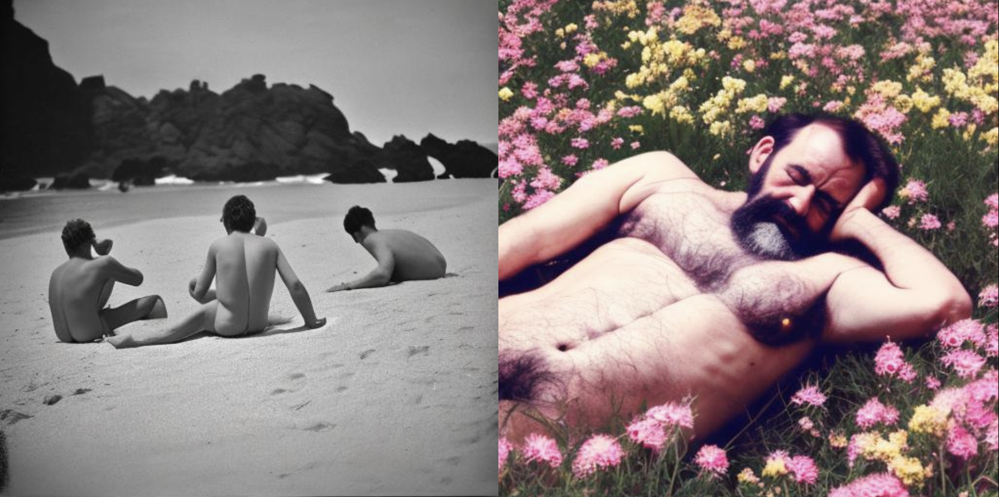
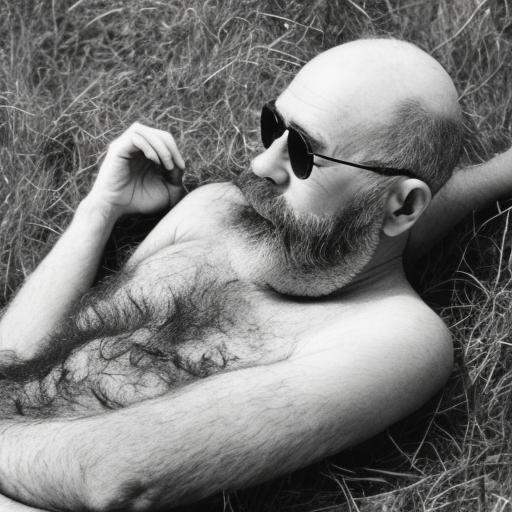
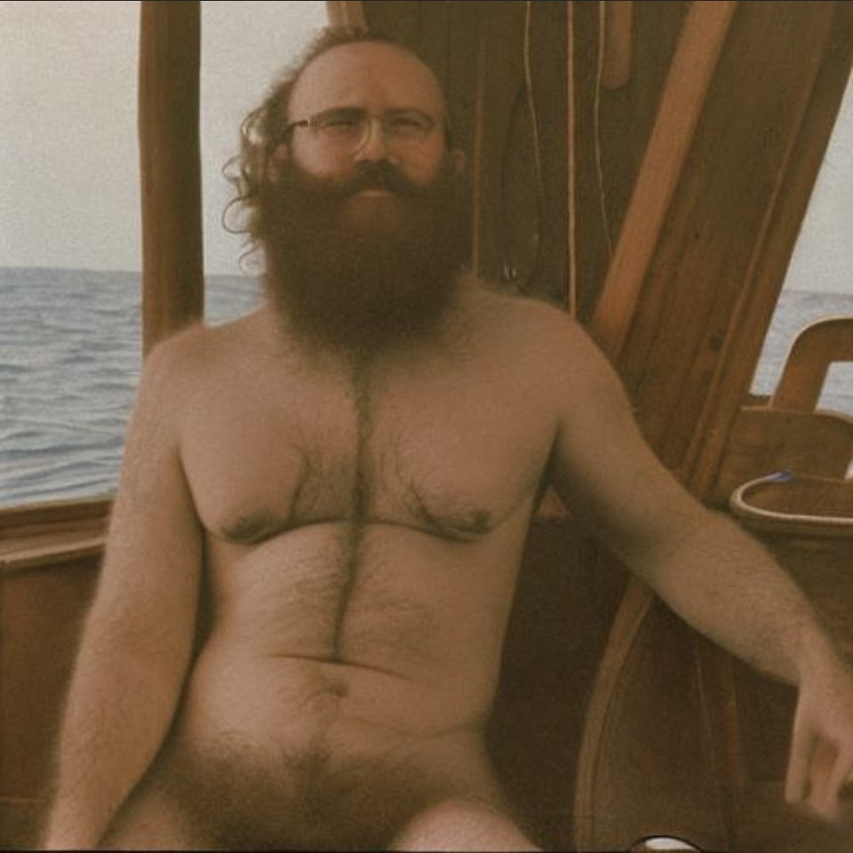
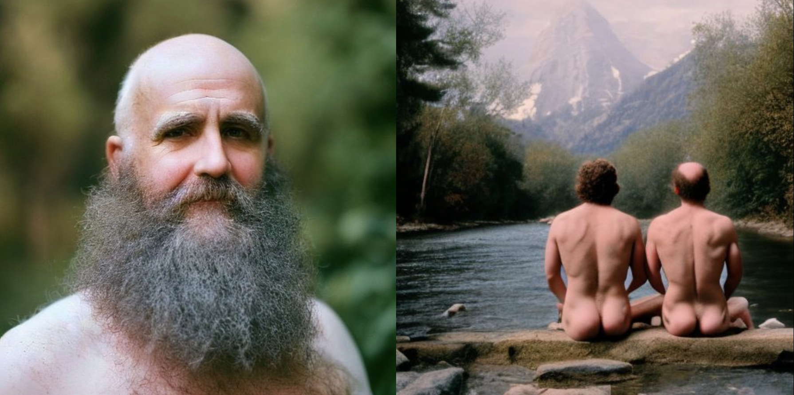

Antanalog

Antanalog is a project that explores and challenges traditional notions of male beauty through the use of artificial intelligence and the tool Stable Diffusion. In this project, I did not select any base photographs, but rather relied on the AI to generate a series of erotic male images from scratch.

Using Stable Diffusion, the AI was able to manipulate and transform various elements such as facial features, body type, and overall appearance based on the prompts that I provided.
Antanaglog focuses on creating a series of images that aim to challenge the conventional concption of male beauty and sexuality spectrum. It is a call to action to recognize and embrace the diversity of experiences and perspectives that exist within the realm of human sexuality.
By expanding the boundaries of what is considered beautiful and desirable, Antanalog seeks to empower men to embrace their sexuality and identity, regardless of external expectations. The images created through AI are intended to inspire viewers to question their own preconceived notions of masculine identity and embrace the diversity of expressions that exist within sexuality.
 